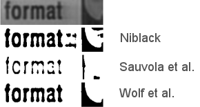

|  |
You need to cite the ICPR 2002 paper in all publications which use this code.
This uses an improved contrast maximization version of Niblack/Sauvola et al's method to binarize document images. It is also able to perform the more classical Niblack as well as Sauvola et al. methods. Details can be found in the ICPR 2002 paper.
The full C++ source code and full documentation can be found on the github page.